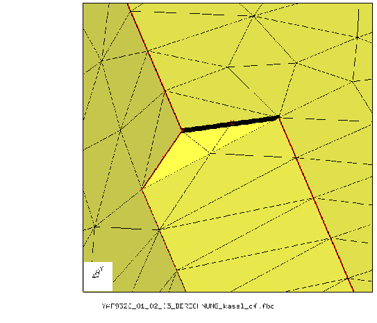

Next: How to check an Up: Tips and Hints Previous: How to process results Contents
Therefore cgx can only generate a tet-mesh if one of these programs are accessible. For the full functionallity replace the original ng_vol source file in the NETGEN package with the modified program ng_vol from the cgx-distribution and build it again. This version regards a target element size. Tetgen is able to regard that size unchanged.
Sometimes the geometry consists of several (maybe even identical) parts which are arranged on different positions in space. This is called assembly. When cgx is started with the parameter “-stepsplit” instead of “-step” it will write the single parts to separate directories using their original coordinate systems. The user can prepare meshable geometry or meshes based on them. But he must use the filenames which he finds there. The final meshed assembly can be build afterwards by calling the fbl-file which was written by cgx. This fbl-file contains the original step-commands to position and eventually duplicate the single geometries/meshes from the subdirectories.
The following section describes the process to generate a tet-mesh with cgx based on a cad model:
(ie: vda2fbd halter.vda > halter.fbd).Remark: In some cases the header of the vda file causes trouble and must be modified to make the program run.
# merge only points which are referenced by lines
seta LBUF l all
comp LBUF e
merg p LBUF
# delete zero length lines
del l0 all
# set the line divisions
div all auto
The user may use this command sequence when he reads a cad fbd file during run time (“read cadfile.fbd”). See the commands merg, div, qdiv, qlin, comp and rep.
Remark: In some cases surfaces are not meshable when you had combined surfaces with “qmsh”. The referenced NURBS might be too small to cover the whole surface. Without such a related nurbs no unstructured mesh can be created. If structured elements are no solution you may delete the related NURBS from the surface definition with ”qsur” using key 'b'. Then store the surface in a set and create a new NURBS with “nurs ! setname”. The surfaces stored in the set will produce NURBS based on the Coons algorithm [14]. If the surface shape matches a primitive shape you may also use the ”qshp” or ”shpe” command to generate such a shape and assign it to the surface.
|  |
Additional remarks:
qlin (select the lines with 'a', 'x')
qpnt (select the line endpoint 'p', in the figure marked with
DL2M and place it over the other endpoint 'p')
The line(s) are now deleted. Often such a surface is only
meshable with a regular mesh (tr6), so change the type
and mesh then:
qmsh (select the surface 's' and change the type 'x' and mesh
'm')